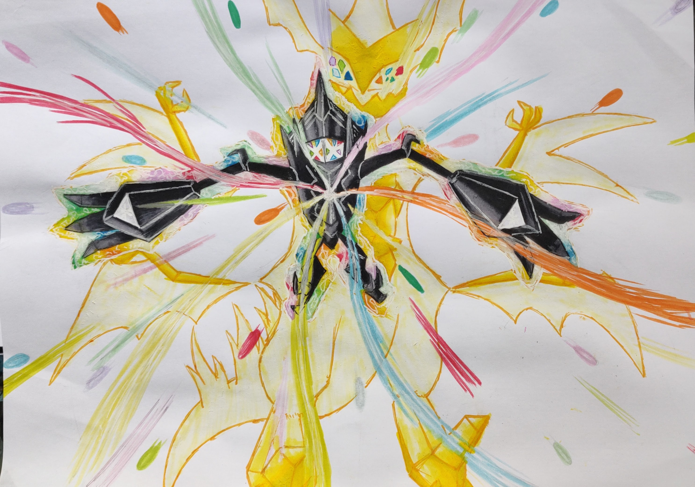
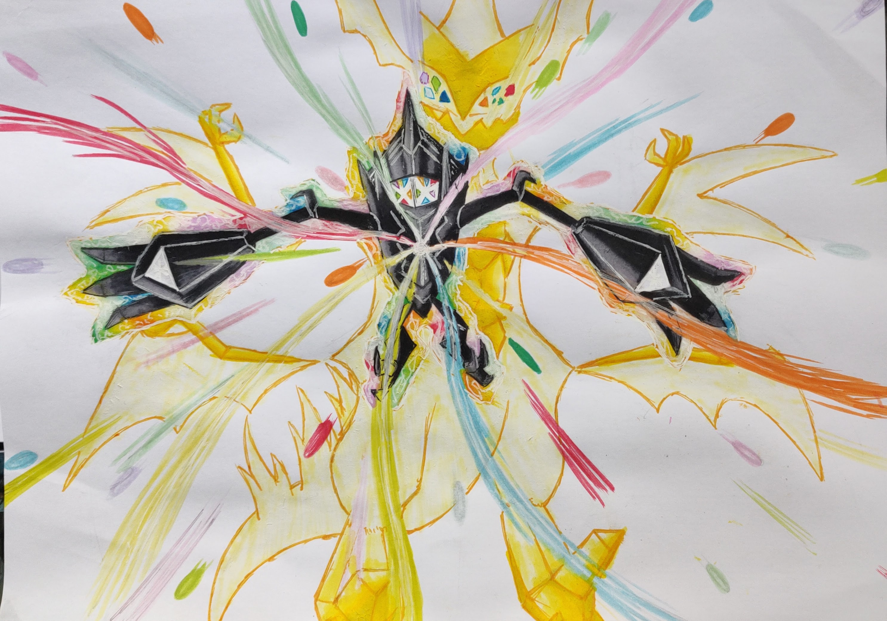

My physical art is mostly a bit older than my digital art. Since getting a drawing tablet I swtiched to mostly sketching physical, while finishing the works digitally.
These are a few physical works I'm still proud of and had a lot of fun making.
The first drawing you'll see below was actually made in tandem with research for the processing light project you'll see on this page.
And the other drawings shown here were just some I made in my free time, but still like, mostly for the use of color and variety of material.
One of these drawings will usually have pencils, fineliners, markers, sometimes colored pencils and gell pens used.

 
